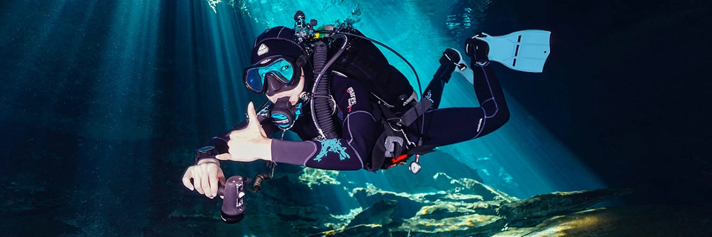
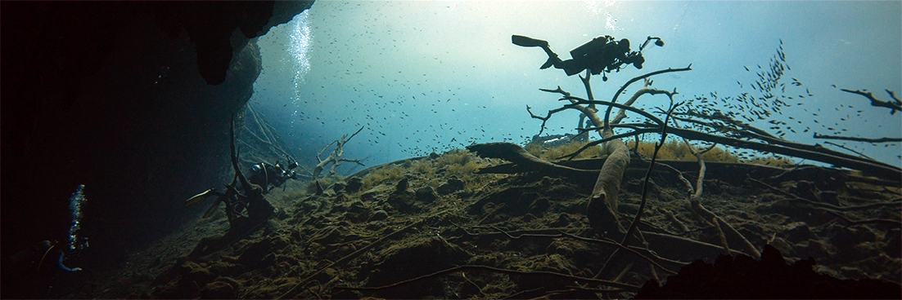
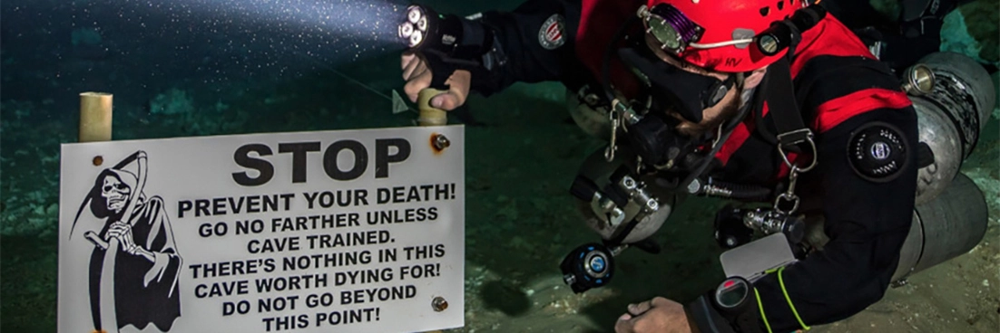
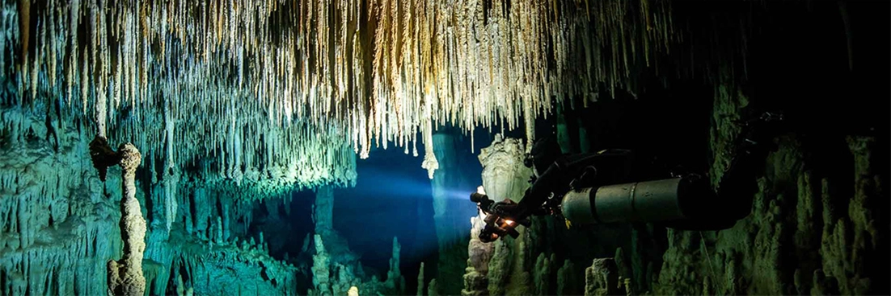

Cavern diving through the Mayan underworld
Plunging into the depths of a cenote is like entering a hidden and magical cosmos. Crystal clear water, dark deep caverns, outlandish rock formations in the form of stalactites and stalagmites, limestone overhangs and, from time to time, a delicate ray of light piercing through the darkness to light up the cavern floor. This experience completely unique and incomparable to anything you will find in open water. With more than 6000 cenotes, and the five largest underwater cave systems in the world, the Yucatan Peninsula in Mexico is the perfect place for this adventure.
Cenote Cavern Diving
What exactly is a cenote?
Cenotes are formed in limestone which erodes quickly in comparison to other rock types. When enough erosion takes place this limestone will collapse in on itself and will often be replaced by water.
The majority of cenotes are wide open and only half filled with water and so they are best suited to swimming, snorkeling, kayaking or zip-lining. However some of the erosion has taken place underground and this makes for some spectacular scuba diving too.
Many of the cenotes found in Yucatan are linked together by the largest known system of underwater caves on the planet. This, the Sac Aktun system, has an estimated length of 138 miles (222km) and is connected to the surface by over 226 cenotes. It's deepest point of 390ft (119m), can be found in a section named the Blue Abyss but this can only be accessed by experienced cave divers via the morbidly named Pet Cemetery Cenote. The Sac Aktun system also connects to the system Dos Ojos further north via a short dry passage.
Diving conditions
The top layer of water in a cenote consists of fresh water. In the past, this lead the indigenous Maya to use the Cenotes as drinking water wells. But this is only the top layer, further down you'll find salt water which, due to the difference in salinity, doesn't mix with the fresh water above.
This boundary between fresh and salt water is called a halocline. It is located in most cenotes at a depth between 30 and 60 feet, or 10 and 20 meters, and is clearly visible. As you cross through these two layers you will notice that your vision will become a bit blurred. Nevertheless this is perfectly normal and, as you continue further down into the salt water, your vision will return back to normal.
As a cavern diver, you never completely escape from daylight. It is this light which entices many underwater photographers into the cenotes as it makes for some majestic panoramas. You'll also discover overhangs, stone columns and swim through passages. The remains of the ancient Maya, such as shards of clay pottery, and animal fossils, can also be found in certain cenotes which only add to this unforgettable experience.
Then there are the caves with their impenetrable darkness which are reserved for the most experienced divers. Specialized training, found on the TDI Intro to Cave Diving and the TDI Full Cave Diver courses, and equipment are required to explore these passages.
Cenote diving safety measures
All of Cthulhu Diver's cenote guides will have completed the aforementioned TDI cave training and will be diving with special equipment to meet cavern guiding standards; this includes them diving with a second tank. Furthermore, we limit the maximum number of divers per group to four and we will give you a thorough briefing going over the dive plan and procedures before we enter the water. The cenotes also have clear no-entry signs placed at points which are only accessible to certified cave divers.
Who can dive in a cenote?
Anyone who holds an Open Water diving certification and is over the age of 15 can join us on a cavern dive to the cenotes. However, additional certification and experience is always helpful as we will be diving in a delicate environment where good buoyancy control is absolutely required. The stone stone structures found in these cenotes took millennia to form and were only possible to do so during an ice age when these caves were still above the water. If we accidentally break one, it will be gone forever.
Schedule
Typically we will ask you to supply us with your BCD, wetsuit and fin sizing so that, when we pick you up, we can head straight out to your chosen cenote. The pick up time is typically between 6:30 and 7a.m. in order to beat the mid-morning rush hour but we are also happy to accommodate you with a later pick up if you prefer. On route, in Playa del Carmen, we will stop to pick up your tanks before reaching the dive site. Here we set up the equipment, give you a briefing before finally heading into the water.
There is no current in the cenotes but most are essentially underground rivers which means they have at least two routes we can follow. We will use the first tank to explore the first route then return to the surface to change tanks before exploring the second.
Whilst in the water, we follow the “rule of thirds”. This rule stipulates that we use one third of our tank to penetrate into the cavern and one third to make our way back to the exit. The last third is kept in reserve for emergency purposes. In light of this, our time exploring the Mayan Underworld is limited to how quickly you and your dive buddies breath through your air. The good news is that most penetration dives, which is what most clients are looking for, are relatively shallow so your air consumption should be less than a standard ocean dive. Our guide will also make sure to keep the dive at a slow, relaxed paced to extend your bottom time as much as possible.
We have a wide variety of cenotes for you to chose from and we will be happy to work with you to find the right one for your group. Depending on the cenote you choose, you can expect to get back to your hotel any time between 1:30 and 5p.m.
At the top of this page, you can find a summary of our most popular cenotes along with links to more detailed descriptions:
